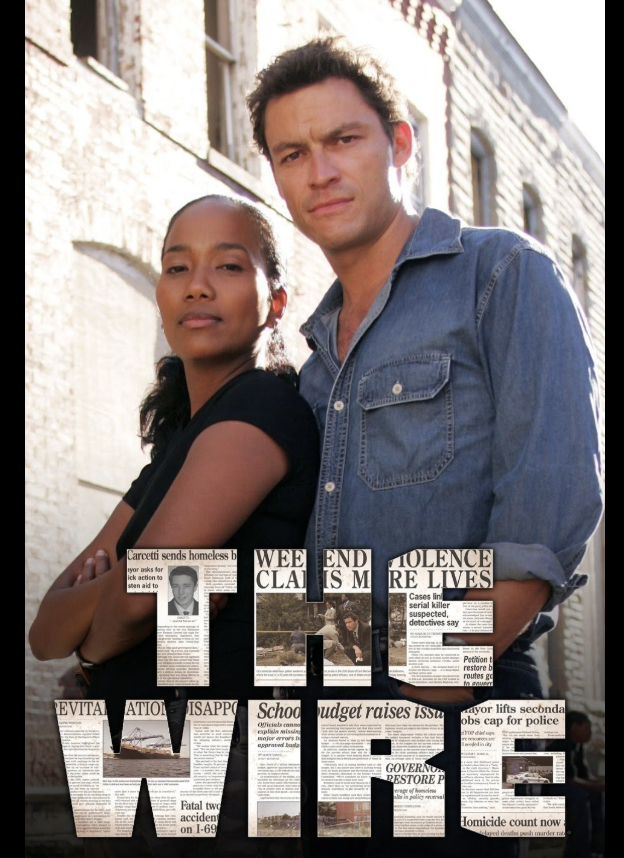

Why is prestige drama so important?
Also known as the “Golden Age of TV”, the new modern prestige genre marked the beginning of dramatic television that prioritized high cinematic quality, introducing complex anti-heroes, and rich, multidimensional storytelling.
Learn More